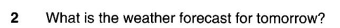
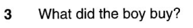
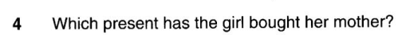
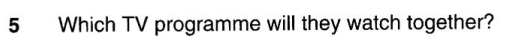
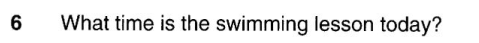
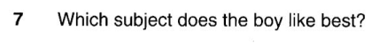

B1 – Listening Test 2
Complete all four parts, check your answers, then submit your result.
Student information
Part 1 – Questions 1–7
There are seven questions in this part.
For each question there are three pictures and a short recording.
For each question, choose the correct answer A, B or C.
Mum: I’m going to mend and paint the cupboard in your bedroom today.
Daughter: Great, Mum. Anything I can do to help?
Mum: Yes, can you go to the shop and get me a new hammer – this one’s broken. But before you do that, ask your dad what he’s done with the paintbrush – I’ve looked everywhere for it (Question 1). There weren’t any in the garage; all I could find was this knife which I lost months ago!

Man: And now for those of you planning to go to the rock festival tomorrow, you’ll want to know what the weather’s going to be like. As we go through today, the heavy rain will gradually disappear by the end of the afternoon. Tomorrow we can expect some sunshine with just a few light showers (Question 2), and then some very hot and dry weather is likely by the weekend.

Son: I got most of the shopping you asked for, Mum. I got the last of the bread and some orange juice (Question 3) but sorry, there weren’t any newspapers left.
Mum: Oh, never mind, I need to remember to go in the morning. But what about the tomatoes for the salad?
Son: Ah... I forgot. I’ll go back for them.
Mum: Oh, don’t worry, I’ll stop and pick some up when I go out to collect your sister.

Jane: Hi... it’s me, Jane... I’ve got Mum’s birthday present. I think she’ll like it... Yes, that’s right, a gold-coloured one. She’s always writing letters, so she’ll find it useful (Question 4)... Mmm. I thought about a CD but I’m never really sure what music she likes, and Dad’s bought her a new pair of earrings for her birthday anyway. I’m sure she’ll like what I’ve got her.

Girl: Hasn’t that basketball match finished yet? You know I want to watch the wildlife programme at nine o’clock.
Boy: It’s cancelled, and everything’s running late because the rock concert finished later than expected. Sit down and watch this match with me (Question 5). It’s really exciting, and more interesting than looking at animals.
Girl: Oh, OK then.

Girl: Hi Judy – do you want to play tennis after school – say about 4.30?
Judy: Mmm – that would be fun but I’ve got a swimming lesson. It’s usually at a quarter past five but it’s half an hour earlier this evening, at a quarter to five (Question 6). It takes me ages to cycle to the swimming pool, so I really don’t think I’ll have time today – let’s try tomorrow.
Girl: OK!

Boy: I really like the new IT teacher – our project for this term is to design a new website. I’ve always wanted to know how to do that. The sports teacher is much more serious but that’s still my favourite subject (Question 7). Last year I used to really like geography, but the teacher we have now gives us so much homework.
Part 2 – Questions 8–13
You will hear an interview with a teenager called Simon about going to an indoor climbing centre that has a climbing wall.
For each question, choose the correct answer A, B or C.
Woman: Hello, everyone! Today we’re discussing adventure activities, and I’m talking to Simon Benito, who recently went with his mum to an indoor climbing centre. Simon, what gave your mum the idea to take you there?
Simon: Well, last year my school had a trip to the centre, but I missed it because I was sick. Then recently she went with a friend and tried it herself – and she loved it (Question 8)! So after that she wanted to take me, too.
Woman: And what did you think when your mum suggested going to the centre?
Simon: Well, I knew I was OK at climbing – we’ve been climbing on holidays – and I thought we’d do something similar at the centre. I was really looking forward to it. But then my mum explained that the wall was inside. I wasn’t so interested when I heard that – I prefer being outside (Question 9).
Woman: But did you meet lots of people there?
Simon: Well, yes – that was great! It was early morning when we arrived and the centre had just opened, so it was quiet, but lots of people came later in the morning – and for once I wasn’t the youngest! I’d expected it’d be mainly young people there, but there were people of all ages – serious climbers, mums with five-year-olds... and teenagers like me (Question 10)!
Woman: So what was the climbing wall like?
Simon: Well, luckily it had rocks of different sizes to help you climb. So there was little chance of falling off. And I’d imagined it would look high before you started to climb, but actually it didn’t seem that far to the top. There were lots of really useful holes all over it, too, to put your feet in (Question 11) – green ones for an easy climb, red for more difficult.
Woman: So what was your first climb like? Was it easy?
Simon: No! The instructor showed us what to do and I thought I’d soon get to the top, but I was the last to get there, so I was annoyed with myself (Question 12). The instructor warned us it can be painful for your arms, too, but I didn’t notice. And I did improve.
Woman: So what did you learn from your visit?
Simon: Well, it was great to be with other people who all like doing the same thing! And when I was climbing I had to think carefully where to put my feet before I moved – so that’s helped me to think first before I do things (Question 13). It’s shown me that I am fitter than my friends who spend too much time on their computers.
Woman: Well, thanks, Simon!
Part 3 – Questions 14–19
You will hear a girl called Hannah talking about her family’s champion horse called Griffon.
For each question, fill in the missing information in the numbered space.
Griffon the Horse
Hannah: Hi. My name’s Hannah. I come from a family that trains horses, and we have a champion horse called Griffon. He is black with an incredibly shiny coat. He was born two years ago, in December, and we’re taking him to compete in his first international show in March next year, just after my fifteenth birthday (Question 14).
The whole family is going – me, my sister and our parents. We live in Poland and we’re going to drive through Germany and the Netherlands to the show in England (Question 15), so it’ll be a long journey for us. The event lasts for three days, and we’ll be staying with friends who also have horses.
My sister wanted to ride Griffon in front of the judges, but she’s too young. The rules are that the person riding the horse has to be over 18, so my father will do it (Question 16). Griffon has been to other shows in several European countries. He’s got dozens of cups, but at an event a couple of weeks ago, he got some money as a prize (Question 17), which was a change. It suited us because it’s expensive taking part in horse shows.
Horses have to learn what to do in front of the judges – how to walk and jump. I watch my parents working with Griffon, and my dream is to be a trainer too (Question 18), getting horses ready for shows. My parents want me to study to be a doctor, but I’m not sure about that.
When Griffon comes first in a competition he’s as pleased as we are. Lots of people give their horses sweets when they win, but we give Griffon apples (Question 19). I also think he likes to be the centre of attention.
Part 4 – Questions 20–25
Look at the six sentences for this part. You will hear a conversation between a boy called Jamie and a girl called Miranda about sharing a bedroom with a brother or sister.
Decide if each sentence is correct or incorrect. If it is correct, choose A for YES. If it is not correct, choose B for NO.
Jamie: Hi, Miranda. How are you?
Miranda: Hi, Jamie. I’m fine! I’m helping Mum paint my bedroom at home – the one I share with my younger sister.
Jamie: Oh, how’s it going?
Miranda: Not well – we can’t agree! My sister and I both have got our own side of the room, and they’re completely different! I mean, my side’s blue, with pop posters all over the wall. But her side’s pink, with dolls and stuff. Not my thing at all really, but as I said, she is younger than me – and it looks OK, I guess (Question 20).
Jamie: Mmm – well, I share with my brother Max, but as he’s older than me, I get to use lots of things that my parents don’t really want me to have, because they say I’m not old enough. But he lets me use his laptop, music player... everything (Question 21)!
Miranda: Wow! Now, if that was my little sister, she’d probably go and report it to our mum, and I’d get into trouble! That happens sometimes. Then my sister and I have an argument (Question 22)!
Jamie: Oh? That doesn’t happen with Max and me...
Miranda: No? Well, apart from that, I get on OK with my sister, really. To be honest, she went camping with her school last week, and I really missed her. I found it wasn’t so nice being in our room on my own. I hadn’t expected that (Question 23).
Jamie: I know what you mean. My brother’s going to university soon, and the room will seem really empty. Still, at least I’ll be able to get on with my homework in peace – it’s hard at the moment, as he’s often in the room, too (Question 24).
Miranda: Well, my sister likes playing outside, so it’s OK. But then when she’s not there, there’s no-one to talk to about my problems. She’s really good at listening if she knows I’m worried about something, even though she can’t help.
Jamie: Mmm, my brother’s the same. We wouldn’t do that if we didn’t share rooms.
Miranda: No... so sharing does have good points...
Check answers
After checking, correct answers, scripts and evidence will appear for review.
Submit result
Check your answers first, then submit your result to the teacher.